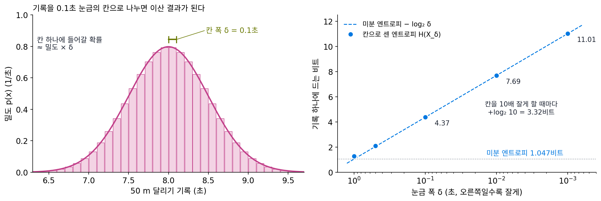
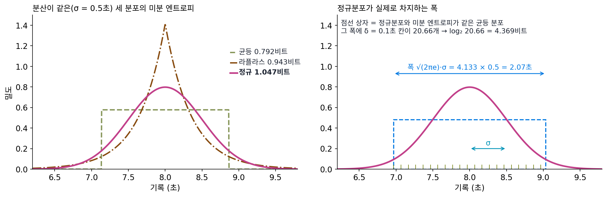
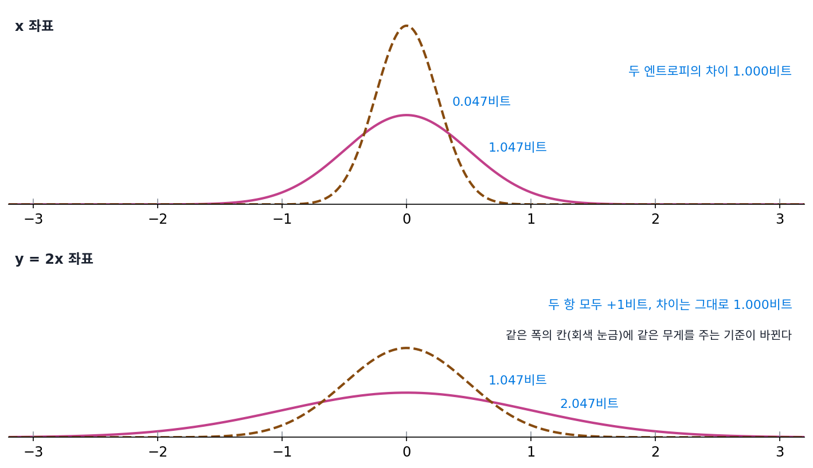
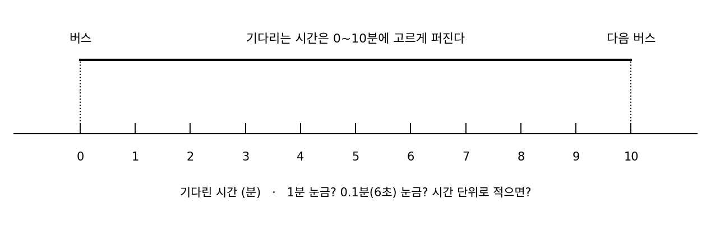
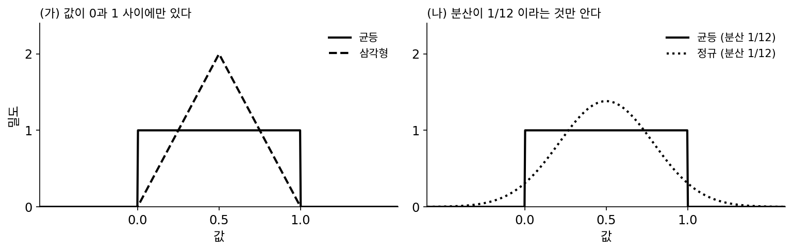
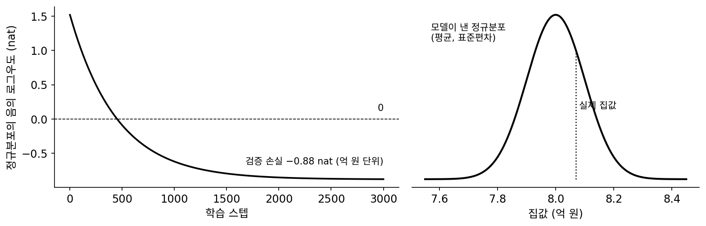

연속값의 엔트로피: 눈금을 정해야 비트가 된다
이 장에서 본 손실은 모두 정답에 준 확률의 놀라움이었고, 확률은 1을 넘지 않으니 손실도 0 아래로 내려가지 않았다. 그런데 집값이나 배달 시간처럼 실수를 맞히는 회귀 모델이 정답의 평균과 표준편차를 함께 내도록 하고 정규분포의 음의 로그우도를 손실로 걸면, 학습이 진행되면서 학습 기록에 음수가 찍히기도 한다. 놀라움이 음수라면 비트를 음수 개 쓴다는 말일까? 날씨나 토큰은 가짓수를 셀 수 있었지만, 실수는 소수점 아래로 얼마든지 잘게 적을 수 있다. 실수 하나를 적는 데는 몇 비트가 들고, 0 아래로 내려간 손실은 무엇을 측정하고 있는 걸까?
스톱워치의 눈금
체육 시간에 측정한 50 m 달리기 기록으로 시작하자. 한 반의 기록이 평균 8.0초 둘레에 표준편차 0.5초로 퍼진 정규분포를 따른다고 하자(설명을 위해 정한 값이다). 0.1초까지 표시하는 스톱워치로 적으면 기록은 7.9초, 8.0초, 8.1초처럼 폭 0.1초짜리 칸 가운데 하나가 되므로, 이 장의 엔트로피를 그대로 계산할 수 있다. 칸마다 기록이 들어갈 확률을 구해 계산하면 기록 하나에 4.371비트가 든다(sources/entropy/s7_continuous.py).
같은 기록을 0.01초까지 표시하는 전자 계시기로 적으면 7.691비트, 0.001초까지 적으면 11.013비트가 든다. 칸을 10배 잘게 나눌 때마다 칸 수가 10배가 되어 log₂ 10 = 3.322비트씩 늘어나므로, 칸을 한없이 줄이면 비트도 끝이 없다. 실수 하나를 소수점 아래 끝까지 적으려면 비트가 무한히 든다는 뜻이다.
그래도 늘어나는 양은 칸 폭만으로 정해진다. 칸 폭이 0.1초일 때의 4.371비트에서 log₂(1/0.1) = 3.322를 빼면 1.049가 남고, 0.01초일 때의 7.691에서 6.644를 빼면 1.047, 0.001초일 때도 1.047이 남는다. 칸이 충분히 잘면 칸 하나에 들어갈 확률은 칸이 놓인 곳의 밀도에 칸 폭을 곱한 값이라, 그 놀라움은 −log₂(밀도)와 −log₂(칸 폭)의 합으로 쪼개진다. 뒤의 항은 어느 칸에서나 같으므로, 평균을 내면 −log₂(밀도)의 평균이 칸 폭과 상관없는 부분으로 남는다.

칸 폭을 δ(델타)로 적고, 기록 X가 폭 δ짜리 칸 가운데 어느 칸에 들었는지를 Xδ로 적으면 다음과 같다.
이렇게 칸 폭과 상관없이 남는, 밀도의 놀라움의 평균을 미분 엔트로피 (연속값의 엔트로피, differential entropy)라 한다. 이름에 「미분」이 들어 있지만 엔트로피를 미분한 값이 아니라 연속값의 엔트로피를 부르는 이름이고, 이 책은 놀라움 h와 헷갈리지 않게 H연속으로 적는다. 달리기 기록의 H연속은 1.047비트이고, 눈금 δ로 적는 비트는 여기에 −log₂ δ를 더한 값이다.
H연속에는 단위가 숨어 있다. 같은 기록을 분 단위로 적으면 표준편차가 0.5/60 = 0.00833분이 되고, H연속은 1.047 − log₂ 60 = −4.860비트로 음수가 된다. 그래도 0.1초는 1/600분이므로, 그 눈금으로 적는 비트는 −4.860에 log₂ 600 = 9.229를 더한 4.369비트이고 칸으로 직접 세면 초 단위와 똑같이 4.371비트다. H연속은 −log₂ δ가 0이 되는 폭 1짜리 칸, 다시 말해 단위 하나를 기준으로 삼은 값이라 무엇을 단위로 삼느냐에 따라 달라진다. 기록은 1분이라는 단위보다 훨씬 좁게 모여 있으니 분 단위에서는 음수가 나오고, 음수라고 해서 비트를 음수 개 쓰는 것은 아니다.
정규분포의 미분 엔트로피
달리기 기록의 1.047비트는 정규분포라서 식 하나로 나온다. 표준편차가 σ(시그마)인 정규분포의 미분 엔트로피는 다음 첫 식과 같고, σ = 0.5초를 넣으면 ½ log₂(2πe × 0.25) = 1.047비트다(π(파이)는 원주율, e는 자연로그의 밑). 둘째 식은 미분 엔트로피에서 log₂ δ를 빼 하나로 묶은 형태다.
둘째 식의 형태는 칸 수를 대략 세는 방법으로 읽힌다. 퍼진 폭을 칸 폭으로 나누면 칸이 몇 개쯤인지 나오고, 칸 k개를 고르게 쓰면 log₂ k비트가 든다. 정규분포는 꼬리가 끝없이 이어지지만 비트를 셀 때는 폭 √(2πe) σ = 4.133σ짜리 균등 분포와 같다. 달리기 기록이면 4.133 × 0.5 = 2.07초 폭에 0.1초 칸이 20.66개 들어가 log₂ 20.66 = 4.369비트로, 칸으로 직접 센 4.371비트와 맞는다. 퍼짐을 칸 폭으로 나눠 칸 수를 대략 세는 log₂(σ/δ)는 여기서 상수 log₂ √(2πe) = 2.047비트를 뺀 값이라, 퍼짐이 두 배가 되면 둘 다 1비트씩 는다.
퍼짐이 같아도 분포의 모양에 따라 미분 엔트로피는 다르다. 표준편차를 0.5초로 맞춘 세 분포를 비교하면, 폭 1.732초에 고르게 퍼진 균등 분포는 0.792비트, 가운데가 뾰족하고 꼬리가 두꺼운 라플라스 분포는 0.943비트, 정규분포는 1.047비트다. 같은 0.1초 스톱워치로 적어도 각각 4.160, 4.269, 4.371비트라서 정규분포를 따르는 기록이 가장 많은 비트를 쓴다. 정규분포와의 차이 0.255비트와 0.104비트는 표준편차를 바꿔도 달라지지 않는다.

분산이 σ²인 실수는 어떤 모양의 분포를 따르든 미분 엔트로피가 ½ log₂(2πeσ²)를 넘지 않고, 같아지는 것은 정규분포일 때뿐이다. 평균과 분산 말고는 아무것도 정해 두지 않을 때 가장 고르게 퍼진 분포가 정규분포라는 뜻이다. 그래서 분산만 아는 실수를 눈금 δ로 적는 비트는 근사적으로 ½ log₂(2πeσ²) − log₂ δ보다 많이 들지 않는다.
역사: 섀넌이 적어 둔 「좌표계에 상대적」
섀넌의 「통신의 수학적 이론」은 1948년 『벨 시스템 기술 저널』 7월호와 10월호에 나뉘어 실렸고, 10월에 실린 마지막 부분은 전화나 라디오처럼 값이 이어서 변하는 신호를 다룬다. 섀넌은 그 서두에, 연속인 경우의 대부분은 이어진 값을 작지만 유한한 개수의 칸으로 나눠 이산으로 계산하고 칸을 줄여 가며 극한을 취하면 얻을 수 있다고 적었다. 다만 몇 가지 새로운 현상이 나타난다는 단서를 붙였다. 엔트로피는 칸을 줄이면 끝없이 커지는 양인데, 섀넌은 엔트로피를 칸의 극한으로 세우지 않고 합을 적분으로 바꾼 형태 H = −∫ p(x) log p(x) dx로 정의했다(20절).
같은 절에서 그는 이 정의의 성질에 번호를 매겨 늘어놓았다. 표준편차를 정해 두면 엔트로피가 가장 큰 분포는 정규분포이고(성질 5), 그때의 엔트로피가 log √(2πe) σ라는 것도 거기 있다(성질 6). 성질 8에서는 이산과 연속의 중요한 차이 하나를 짚었다. 이산의 엔트로피는 무작위함을 절대적으로 측정하지만, 연속의 엔트로피는 좌표계에 상대적이어서 좌표를 바꾸면 값이 달라진다. 그는 연속의 엔트로피를 작은 부피 칸마다 같은 무게를 주는 좌표계를 기준으로 측정한 무작위함으로 풀었고, 그래서 음수가 될 수 있다고 적었다. 측정의 눈금이 단위 부피 위의 균등 분포를 0으로 정하는 셈이라, 그보다 좁게 모인 분포는 음수가 된다는 것이다.

그래도 그는 이 개념이 연속에서도 이산만큼 중요하다고 썼다. 정보의 전송률과 채널 용량은 두 엔트로피의 차이이고, 좌표를 바꾸면 두 항이 같은 만큼 바뀌어 차이는 좌표와 상관이 없다는 것이다. 채널 용량을 다룬 24절에서는 신호의 공간을 아주 작은 칸으로 나눠 이산 채널처럼 계산한 용량이 칸을 줄일수록 연속의 용량에 다가간다고 적었다.

「좌표계에 상대적」이라고 적어 두고 넘어간 거네요. 지금 보면 단위를 하나 정해서 쓰면 그만인 것 같은데요.

섀넌이 다룬 건 전화처럼 소리의 압력을 전류로 바꿔 보내는 신호였어요. 같은 목소리를 어떤 단위로 적든 받는 사람에게 가는 소식은 같은데, 엔트로피는 단위마다 다른 값을 내요. 어느 단위의 값을 「정보의 양」이라고 불러야 할까요?

음, 하나를 고르면 그 단위에서만 맞는 숫자가 되겠네요. 어느 단위도 다른 단위보다 나을 이유가 없으니까요.

섀넌은 연속인 경우를 순수 수학의 엄밀함으로 끝까지 따지지는 않겠다고 적었어요. 그렇게 하려면 추상적인 측도론이 한참 필요하고 논문의 줄기가 흐려진다면서요. 그 대신 그가 쓰려던 양이 무엇이었는지를 봤죠.

전송률도 용량도 두 엔트로피의 차이였으니까, 단위를 바꿔서 두 항에 똑같은 만큼이 더해져도 빼는 순간 사라지는구나. 엔트로피 하나는 단위마다 값이 달라져도, 차이는 기준을 몰라도 되는 거였네요.

그럼 정말 그런지 달리기 기록으로 돌려 볼 수 있겠네요. 눈금을 바꿔 가며 두 엔트로피의 차이를 계산해 보면요.
손 스톱워치가 알려 주는 비트
같은 달리기를 손으로 누르는 스톱워치로도 측정한다고 하자. 누르는 손이 조금 늦거나 이르니, 손 스톱워치의 값 Y는 실제 기록 X에 기록과 상관없는 노이즈 ε(엡실론)이 더해진 값 Y = X + ε이고, 노이즈의 표준편차는 0.2초라고 하자(설명을 위한 값이다). 손 스톱워치의 값을 보면 실제 기록에 대해 평균 몇 비트를 알게 될까? 상호정보량 I(X;Y) = H(Y) − H(Y∣X)를 칸으로 나눠 세면 다음과 같다(sources/entropy/s7_continuous.py).
| 칸 폭 | H(Yδ) | H(Yδ∣Xδ) | 차이 (상호정보량) |
|---|---|---|---|
| 0.1초 | 4.478 | 3.076 | 1.402 |
| 0.01초 | 7.798 | 6.369 | 1.429 |
| 0.002초 | 10.120 | 8.691 | 1.429 |
| 0.01초를 분 단위로 적은 1/6000분 | 7.798 | 6.369 | 1.429 |
두 엔트로피는 칸을 잘게 할 때마다 같은 만큼 늘지만, 차이는 0.1초 칸의 1.402에서 1.429로 조금 움직인 뒤 칸을 0.002초까지 줄여도 1.429에 머문다. 0.1초 칸은 노이즈의 퍼짐 0.2초에 비해 거칠어서 칸 안에 든 정보를 조금 버렸던 것이다. 같은 칸을 분 단위로 적어도 숫자는 하나도 달라지지 않는다.
칸 폭과 상관없이 남은 1.429비트는 두 미분 엔트로피의 차이로 바로 계산된다. 실제 기록 X를 알면 Y에 남은 퍼짐은 노이즈의 퍼짐뿐이고, 밀도를 옆으로 옮기기만 하는 것은 미분 엔트로피를 바꾸지 않는다. 노이즈가 기록과 상관없으니 Y의 분산은 두 분산의 합이다.
숫자를 넣으면 ½ log₂(1 + 0.25/0.04) = ½ log₂ 7.25 = 1.429비트로, 잘게 나눈 칸에서 센 값과 같다. 두 엔트로피의 차이로 정의되는 양에서는 칸마다 붙던 −log₂ δ가 두 항에 똑같이 붙었다가 빼는 순간 지워진다. 그래서 상호정보량은 눈금도 단위도 모르는 값이고, 엔트로피 하나와 달리 0보다 작아지지도 않는다.
ML에서: 8비트 그림의 우도는 눈금을 밝혀야 읽힌다
그림의 화소 값은 0부터 255까지의 정수로 저장되지만, 밀도를 직접 내는 생성 모델은 화소를 실수로 보고 −log₂(밀도)의 평균으로 성적을 매긴다. 테이스(Lucas Theis)·판덴오르트(Aäron van den Oord)·베트게(Matthias Bethge)는 2016년 ICLR 에 낸 「생성 모델 평가에 대한 노트(A note on the evaluation of generative models)」에서 여기에 숨은 함정을 짚었다. 정수 위에만 놓인 자료의 미분 엔트로피는 음의 무한대라서, 정수마다 뾰족한 봉우리를 세운 모델은 처음 보는 그림에서도 우도를 얼마든지 높일 수 있다. 그래서 정수 화소 값에 0과 1 사이의 균등한 노이즈를 더해 폭 1짜리 칸 안에 고르게 펴 놓고 우도를 계산하는 방법이 자리를 잡아 가고 있었고, 그들은 이렇게 계산한 −log₂(밀도)의 평균이 같은 모델을 칸마다 적분해 만든 이산 모델로 화소를 무손실 압축할 때 드는 평균 비트보다 작지 않다는 것을 보였다. 칸 폭이 1이라 −log₂ δ = 0이고, 보고한 숫자가 실제로 적는 비트의 위쪽 한계가 된다.
같은 모델이라도 화소 값을 256으로 나눠 0과 1 사이의 값으로 학습시키면 칸 폭이 1/256로 줄어든다. 화소가 평균 128, 표준편차 20인 정규분포를 따르고 모델도 그 분포를 낸다면, 0~255 눈금에서 −log₂(밀도)의 평균은 6.369비트이고 정수 칸으로 직접 센 엔트로피도 6.369비트다. 같은 모델을 0~1 눈금에서 계산하면 6.369 − log₂ 256 = −1.631비트로 음수가 나온다. 화소 하나(차원 하나)당 비트로 성적을 비교할 때는 어느 눈금에서 계산한 값인지부터 맞추고, 0~1 눈금의 값이면 화소마다 8비트를 더해 정수 칸의 비트로 되돌린다.
문제 15. 버스를 기다리는 시간
10분마다 버스가 오는 정류장에 시간을 보지 않고 나가면, 기다리는 시간은 0분에서 10분 사이에 고르게 퍼진다. (가) 기다린 시간을 1분 눈금으로 적으면 하나에 몇 비트가 드는가? 0.1분(6초) 눈금이면? (나) 기다리는 시간의 미분 엔트로피를 분 단위로 구하라. (다) 같은 시간을 시간(60분) 단위로 적으면 미분 엔트로피는 얼마인가? 그 부호는 무엇을 말하는가? 6초 눈금으로 적는 비트는 달라지는가?

(가)는 1분 칸이 10개고 모두 같은 확률이니까 log₂ 10 = 3.322비트예요. 0.1분이면 칸이 100개라 6.644비트고요.
(나)는 밀도가 10분에 걸쳐 고르게 1/10이니까 −log₂(1/10)의 평균, log₂ 10 = 3.322비트야. 1분 눈금으로 센 값이랑 같네.
1분 눈금과 같은 값이 나온 게 우연일까요? (다)에서 단위를 시간으로 바꿔 보세요.
음, 시간 단위면 0에서 1/6시간 사이에 퍼지니까 밀도가 6이에요. −log₂ 6의 평균이라 −2.585비트, 밀도가 1보다 커서 음수가 됐어요.
6초는 1/600시간이니까 −2.585 + log₂ 600 = 6.644비트. 분 단위에서 0.1분 눈금으로 센 값이랑 똑같아.
그럼 −2.585비트의 음수는 무엇을 말하죠?
기다리는 시간이 단위로 삼은 1시간보다 여섯 배 좁은 곳에 몰려 있다는 거요. 그럼 (나)에서 1분 눈금과 값이 같았던 것도 1분이 단위였기 때문이네요.

그래요. 미분 엔트로피는 단위 하나를 칸으로 삼은 값이라 단위를 따라 움직이고, 눈금을 정해 센 비트는 단위를 바꿔도 그대로예요.
문제 16. 범위를 정할 때와 분산을 정할 때
(가) 값이 0과 1 사이에만 있다는 것만 안다. 0과 1 사이의 균등 분포와, 0.5에서 가장 높고 양 끝에서 0이 되는 삼각형 분포의 미분 엔트로피를 비교하라. (나) 이번에는 값의 분산이 1/12(위 균등 분포의 분산)라는 것만 알고, 값은 0과 1 밖으로 나가도 된다. 분산이 1/12인 정규분포의 미분 엔트로피를 구해 균등 분포와 비교하라. (다) 미분 엔트로피가 가장 큰 분포가 (가)와 (나)에서 다른 이유는 무엇인가? 결과가 m가지인 분포의 엔트로피가 균등할 때 가장 크다는 것과는 어떻게 이어지는가?

(가)는 삼각형이 더 클 것 같아요. 분산이 같으면 정규분포가 가장 크다고 했으니까, 가운데가 불룩한 삼각형이 정규분포에 더 가깝잖아요.
계산해서 확인해 볼까요? 두 분포의 밀도부터요.
균등 분포는 밀도가 1이라 −log₂ 1의 평균, 0비트예요. 삼각형은 가운데 밀도가 2까지 올라가는데… 반쪽씩 적분해 볼게요. (½ + ln ½)/ln 2 = −0.279비트예요.

어, 균등이 더 크네요. 가운데로 몰린 삼각형이 덜 퍼진 거고요. 그럼 정규분포가 가장 크다는 말은 여기서는 안 맞는 거예요?
정규분포가 가장 크다고 할 때는 무엇을 정해 두었죠? (나)를 계산하면서 보세요.
분산이었어요. 그럼 (나)부터 볼게요. ½ log₂(2πe/12)에서 2πe/12 = 1.423이고, 로그의 절반이면 0.255비트예요.
분산이 같으니 정규분포가 균등 분포보다 0.255비트 크네. 표준편차 0.5초에서 정규분포가 균등 분포보다 컸던 차이랑 같은 값이고. 그런데 (가)는 분산이 아니라 0과 1 사이라는 자리를 정했고, 정규분포는 꼬리가 그 밖으로 나가니까 처음부터 후보에 들 수 없었네.

아, 무엇을 정해 두느냐가 가장 큰 분포를 고르는 거구나. 자리를 정하면 균등 분포, 분산을 정하면 정규분포. 결과가 m가지일 때 균등 분포가 log₂ m으로 가장 컸던 것도 자리를 m개로 정해 둔 경우였고.

그래요. 섀넌도 연속의 엔트로피 성질로, 값이 정해진 부피 안에만 있으면 균등 분포가 가장 크다는 것과 표준편차를 정하면 정규분포가 가장 크다는 것을 함께 적었어요.
문제 17. 0 아래로 내려간 회귀 손실
집값을 맞히는 회귀 모델 A가 집마다 평균과 표준편차를 내고, 실제 집값에 대한 정규분포의 음의 로그우도(nat)를 손실로 학습한다. 모델이 내는 표준편차는 0.1억 원 안팎이다. 집값을 억 원 단위로 넣었더니 검증 손실이 −0.88 nat이었다. (가) 손실이 0보다 작아도 되는가? (나) 같은 모델과 자료에서 집값을 만 원 단위로 바꿔 넣으면 손실은 얼마가 되는가? (다) 입력을 다 알아도 집값에는 표준편차 0.1억 원의 정규분포 퍼짐이 남는다고 하자. 다른 모델 B의 검증 손실은 억 원 단위로 −0.70 nat이었다. 두 모델의 손실 가운데 학습으로 줄일 수 있는 부분은 각각 얼마이고, 만 원 단위로 바꾸면 무엇이 움직이는가?

(가)는… 손실이 음수인 건 처음 봐요. 손실은 정답의 놀라움이라 0보다 작을 수 없는 줄 알았는데요.
이 손실의 로그 안에 들어가는 건 정답에 준 무엇이에요?
확률이 아니라 정규분포의 밀도요. 표준편차가 0.1억이면 가운데 밀도가 1/(0.1 × √(2π)) = 3.989라서 1보다 커요.

아, 버스 기다리는 시간을 시간 단위로 적었을 때랑 같네요. 억 원이라는 단위가 집값의 퍼짐 0.1억보다 훨씬 커서 음수로 내려간 거예요. 계산이 틀린 게 아니었네요.
그럼 (나)는요?
만 원 단위면 값이 10⁴배로 늘어나니까 밀도는 10⁻⁴배가 되고, −ln(밀도)에 ln 10⁴ = 9.21이 더해져요. −0.88 + 9.21 = 8.33 nat이에요.
(다)로 가 봐요. 이 장에서 손실은 무엇과 무엇의 합이었죠?
자료의 엔트로피와 KL이요. 여기서 바닥은 입력을 다 알아도 집값에 남는 퍼짐의 미분 엔트로피니까, ½ ln(2πe × 0.1²) = −0.88 nat이에요.
그럼 A는 바닥에 붙어 있어서 줄일 KL이 거의 없고, B는 −0.70이니까 0.18 nat이 KL이네.
만 원 단위로 바꾸면 바닥과 두 손실은 어떻게 되죠?
바닥과 A는 8.33, B는 8.51이에요. 셋 다 9.21씩 올라가고 B의 KL 0.18은 그대로네요. 단위가 옮기는 건 바닥뿐이고, 학습이 줄이는 KL은 단위를 모르는 거예요.
그래요. −0.88 nat의 모델과 8.33 nat의 모델은 같은 모델이에요. 회귀 모델끼리는 같은 단위로 계산한 손실을 비교하면 되고, 두 손실의 차이가 KL의 차이예요.